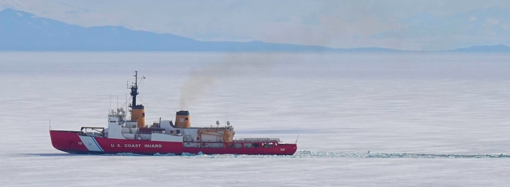
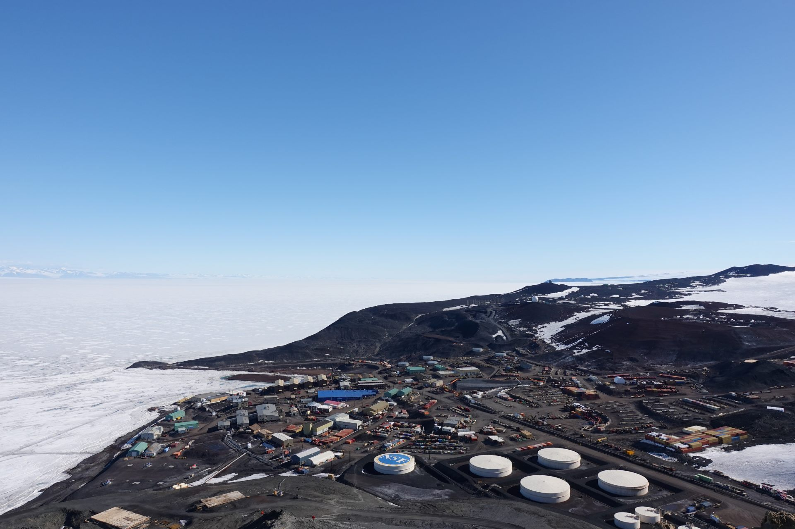
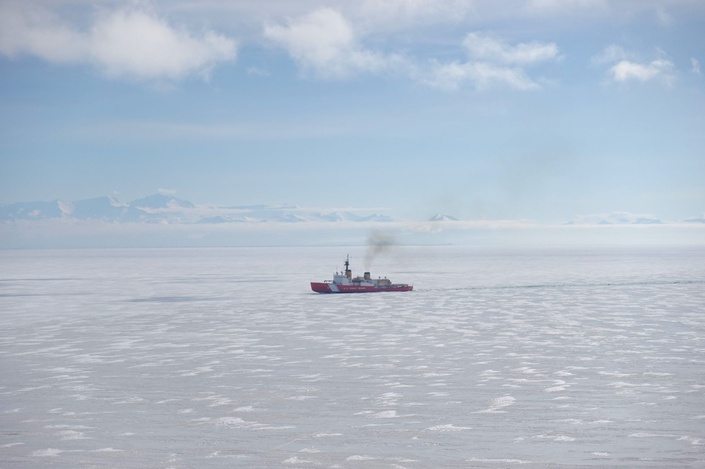
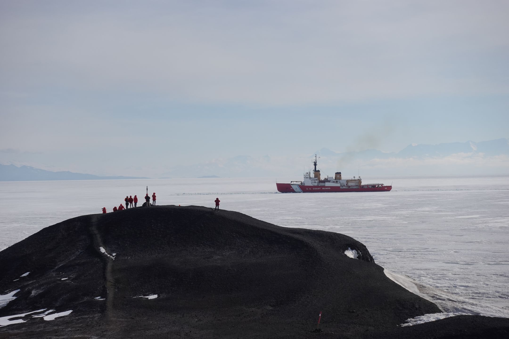
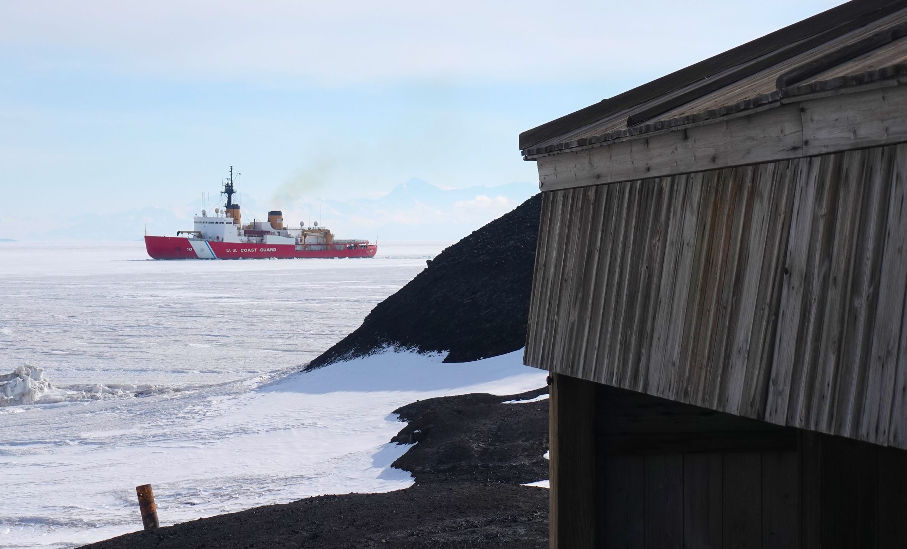

January 2024
Table of Contents
Penguins!
2024.01.02
The question I was most frequently asked is "Have you seen any penguins?", right ahead of "Have you seen any polar bears?". Today, they showed up en masse! There were reports of some penguins far off on the ice shelf the previous few days, so everyone's eyes have been peeled for their arrival.


I have no knowledge of why penguins come and go and why they choose to post up where they do, but they all decided to stop right below the helicopter pad by the water intake pipe. This led to some easy viewing on our part as they were just offshore.


Thanks for reading!
Icebreaker - a Prelude
2024.01.04

Naviget Bene Turbatum Mare.
At McMurdo, the way that most people come and go is by air on the regular airlift schedule out of Phoenix and Williams airfields. However, a good chunk come on ships for short stints in mid-to-late summer. Our first aquatic visitors were visible on the horizon, at the extent of the sea ice, on December 30. The USCGC Polar Star is a ship specifically designed for breaking through sea ice to allow passage for other ships. In McMurdo's case, it clears the way for cargo and fuel vessels that resupply station on an annual basis.

Can you see the Polarstar on the horizon? Look for the tiny smidge. Maybe it's underwhelming but knowing a ship was coming and being able to see it caused a big perspective shift about the remoteness of this continent as a first-timer.

Six days later, on January 4, the Polarstar was just off the tip of Hut Point as it broke through the sea ice en route to Winter Quarters Bay. The video shows how the Polarstar breaks sea ice by backing up, charging forward, and riding up onto the sea ice to let its weight (13,000 tons!) do the work.
The Polarstar is based out of Seattle, Washington, and operated by the Coast Guard. It is one of two heavy Polar-class icebreaker ships operated by the Coast Guard and the only one that remains active - the other being the USCGC Polar Sea which has been out of service since 2010 (as an aside, this has given the Polar Star the nickname "Polar Spare"). It operates in both the Arctic and the Antarctic, and part of its yearly assignments is to travel from Seattle to McMurdo to break up sea ice in the Ross Sea region to maintain open water for other vessels coming in the area.

It draws quite the attention when it approaches town, and when it's just off of Hut Point as it is in these photos it draws a crowd. When someone is spotted on deck, everyone on shore started frantically waving to try and get their attention. It was an interesting merging of two worlds. Moreso when you realize you have a ship coming through to break the ice to make it to the same port used over 100 years ago by Scott and Shackleton.

As the title implies, this is just a primer for an eventual longer post about the Polarstar. Its first approach is meant to break up the ice in and around the sound - it won't dock yet but instead spend its next few weeks keeping a path open for other ships.
More on this to come! Thanks for reading!